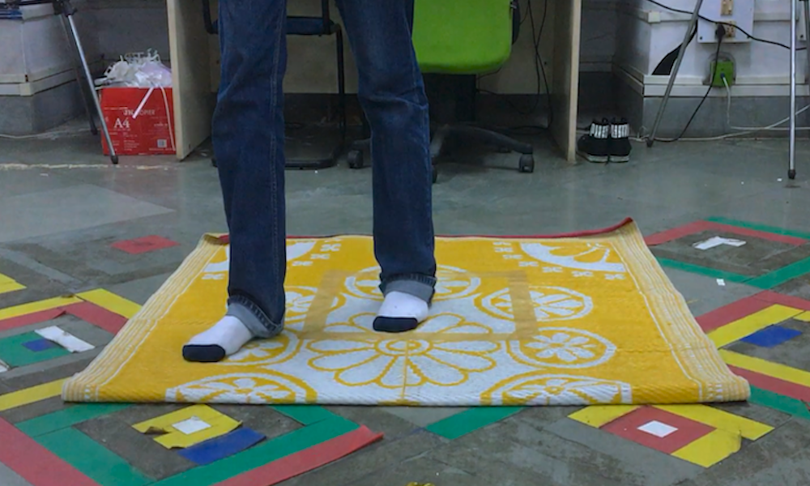
and Video Prototyping
Winter 2018
The Problem
Navigating in virtual reality spaces with conventional input devices simply aren't intuitive enough to mimic realistic navigation. The goal was to ideate over new interfaces that allow for an intuitive way of traveling and wayfinding.
The Solution
Our solution is a world-grounded mat that uses a pressure-sensitive surfaces to allow the user to navigate in virtual environments. Designed to work with head mounted displays, the mat uses special geastures to sense the user's input.
Sensy Mat is an innovative new tangible interface that allows the user to dictate direction of travel when navigating in virtual environments. It uses the positions of the user's feet to sense the direction of motion, with the help of pressure sensors embedded in the device.
Key Interactions
It uses special gestures designed to be intuitive and natural for a user, with a low learning curve. The gestures were also designed keeping in mind the natural postures of walking and running.
Walking
The user walks across the virtual space by simply placing his feet in the active zone, in the direction of the required movement. This activates the sensors which detect where the feet are placed and reflects the movement in the virtual world.
Running
To run, the user simply leans forward, which puts the user into a more dynamic posture, almost mimicking the posture assumed by runners. The head mounted display, with the help of a gyroscope and accelerometers, sense the leaning of the user and increase speed accordingly.
Observation
When the user places both his feet in the active zone, they enter what is called the observation zone. Here, the screen enters a special zoomed in stage where the user can look around and observe, in close range, the environment around him.
The Process
To understand navigation, we first looked at current interfaces used for navigation in virtual environments. This ranged from simple gestures to complex input devices.
Teleport

The user can jump from one point to another by selecting the point in space.
Head Tilt
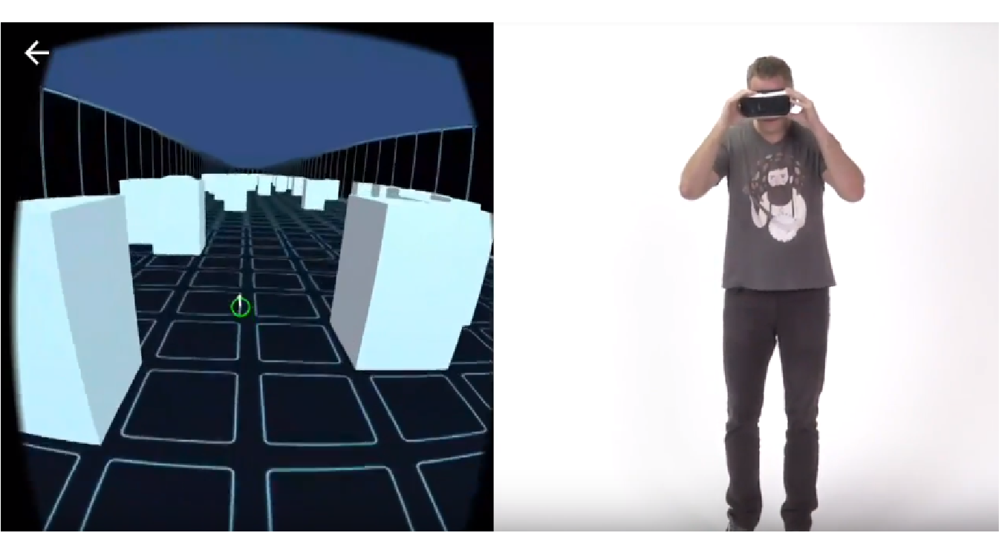The user tilts the headset forward, which senses the change.
Natural Walking
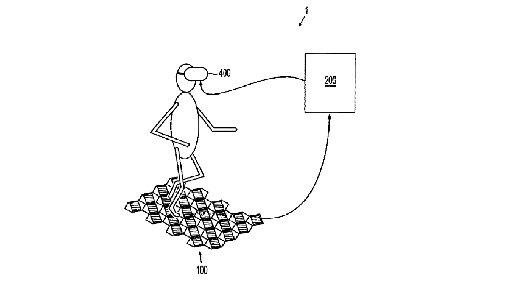Natural walking is achieved with the help of a pressure sensing mat where the position of the feet reflects in the virtual world.
Cybershoes
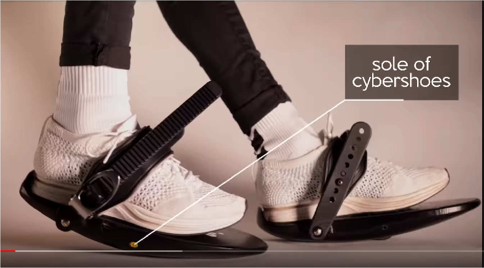These shoes have rollers in the soles to detect the movement of the feet.
Infinadeck

It is an omnidirectional treadmill which senses the sentre of gravity of the user and moves the treadmill according to where the user is moving.
Kat Walk
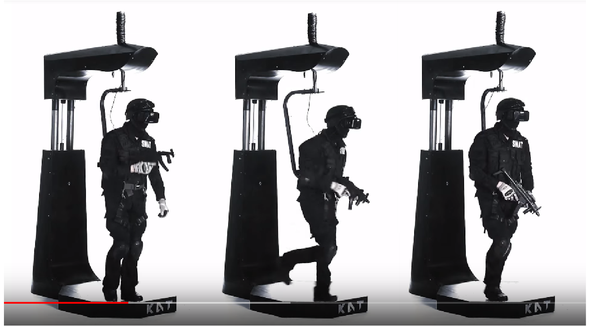With the help of an omni directional treadmill, the user can perform all kinds of actions in the virtual reality.
Inferences
01
The learning curve is high and way-finding is not entirely possible.
02
For gaze, the headset is heavy and holding the head in place is cumbersome.
03
In natural walking, the user is restricted to a small area and cannot explore a large space.
04
In on-the-spot walking, sustaining the movement for longer periods leads to the fatigue.
Goals
The goal in designing for navigation is to create an interface where the user can move around in virtual spaces in an intuitive manner, where the gestures do not lead to fatigue and can sustain movement for longer periods of time.
Ideation
We ideated over a new and novel tangible interface which would check all the boxes for navigation in the virtual world.
Concept 1
First, we thought of creating a handheld joystick that the user can wield. Using deft flicks of the wrist, the user can control the direction and speed of motion.
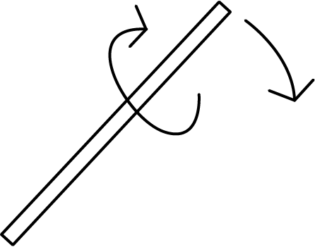
The problems with this interaction include the lack of intuitivity and improper control of speed. Users wouldn’t associate a joystick as a navigation device.
Concept 2
We visualized a controller where the user manipulates the X-Y-Z axes of the virtual world to move from one point to another.
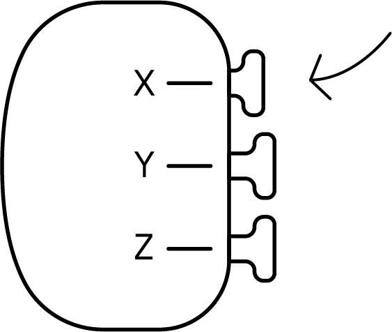
The problems with this interaction include the lack of intuitivity primarily. Users do not visualize the X-Y-Z axes when moving around in the real world, and navigating with that in mind would be cumbersome and difficult to use.
Concept 3
We visualized a globe that can increased or decreased in size to allow the user to manipulate a virtual map.
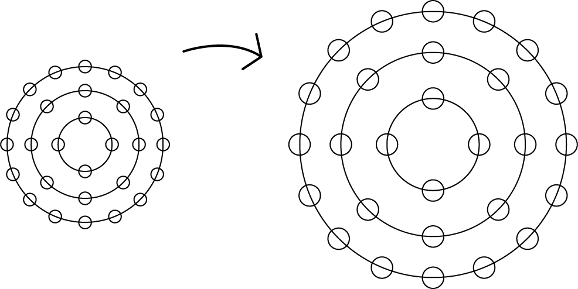
This acted more of a way to control relative position in the virtual world, where the map can be controlled. It didn’t give a plausible solution to traveling.
Concept 4
We then arrived on using the relative positions of the feet on the ground as markers for interactions with the interface, using a pressure sensitive mat that can sense where the user places his feet. The mat has direction markers on all sides, and where the feet are placed reflects the direction in which the user moves in the virtual space.
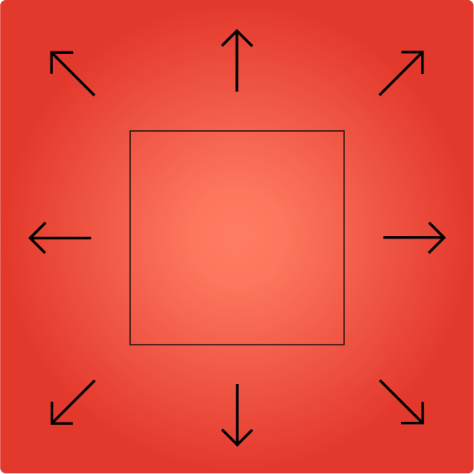
When navigating, the user uses his feet in real life. We realized if we needed the interactions to be intuitive, it needed to include gestured that are feet based.
Gesture Iterations
We then needed to iterate over the interactions that are possible on this mat, and the gesture the user can perform on the mat.
Iteration 1
The mat is divided into predefined zones called the active zone and the passive zone. The user places his feet in one direction and begins to move in that direction. Due to the pressure sensing capabilities of the mat, if the user increases pressure on the mat by shifting his body weight, the mat accounts for this and increases the speed of movement in the virtual space.
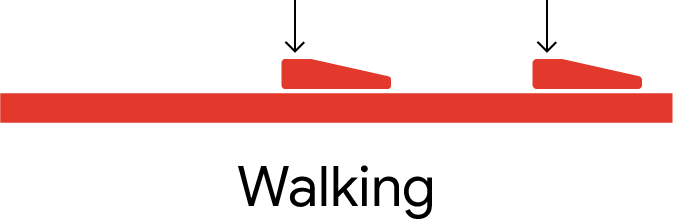
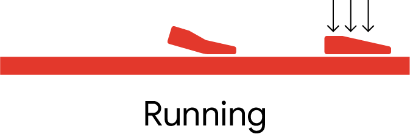
This highly limits the user in sustaining the posture for longer periods of time as it leads to fatigue in the user. Even though the posture is intuitive and stable, the added element of weight can lead to pain in the body when sustained for long periods of time.
Iteration 2
Retaining the dynamic posture earlier thought of, new interactions were devised. When the user’s feet are placed in the passive zone, there is no movement. When the user places both feet in the active zone in one direction, he begins to walk in that direction. When he puts one foot in passive zone and one in the active zone, he begins to run in that direction.
The limitations to these interactions is that there is no speed control and walking in the virtual space while standing in the real world is a mismatch in gestures. With the passive zone strictly defined, there is no room for the user to adjust according to where he places his feet on the mat and is forced to adhere to the defined locations.
Iteration 3
The interactions itself are remodeled. Sticking to the dynamic posture, we devised a gesture where the user can slide across the length of the mat to increase or decrease the speed of movement. Changing the direction repositioning is made easier by allowing the user to slide across the mat in the active zone itself.
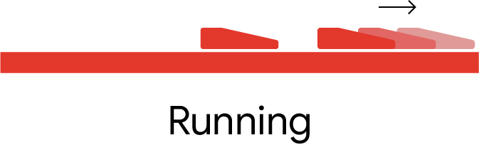
This posed limitations in terms of the errors the user might commit. It was possible the user might unintentionally slide farther than expected, leading to instability. It is also likely the user might slip off the mat in the process, which hinders the experience.
Final Design
The user activates the mat by stepping into the passive zone. The mat senses the positions of the feet on it and uses the relative positions of the feet to direct the user. The user has to step into the active zone to activate movement.
The user walks across the virtual space by simply placing his feet in the active zone, in the direction of the required movement. To run, the user simply leans forward, which puts the user into a more dynamic posture, almost mimicking the posture assumed by runners.
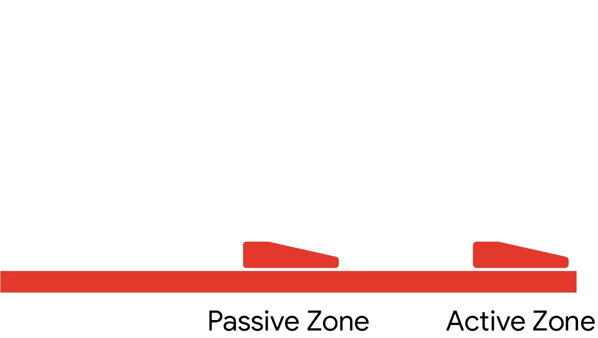
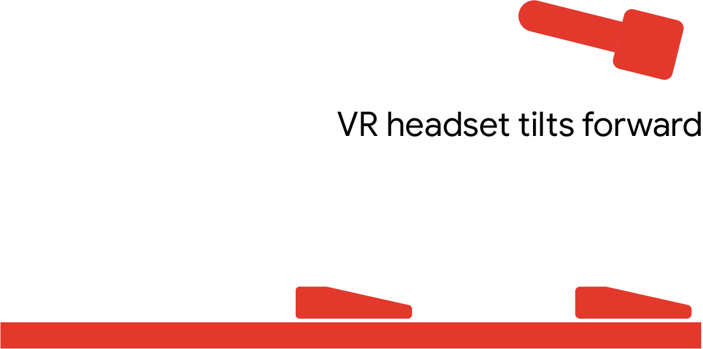
Error Handling
The errors the user is likely to make include stepping onto two contradicting directions at the same time and misstepping into the passive zone when changing direction. These errors are handled with the help of the dynamic passive shift.
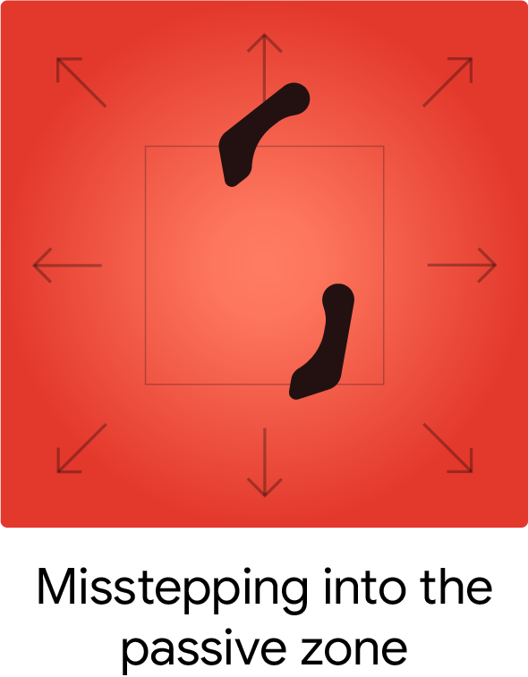
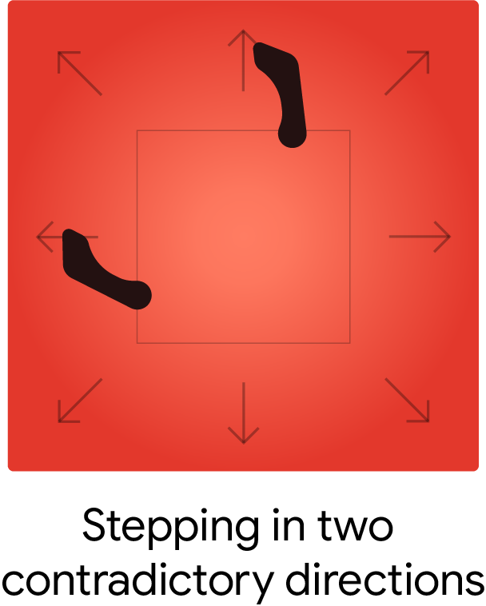
If the user mistakenly steps into the active in two contradictory directions, the application warns the user of the contradiction and slow down movement in the virtual world. It also uses the help of the gradient map to sense the relative position of the feet and predict it was a misstep or the user wishes to change direction.
Sensy Mat
The Sensy Mat is a tangible interface that allows the user to navigate through a virtual space with minimal effort and for long periods of time.
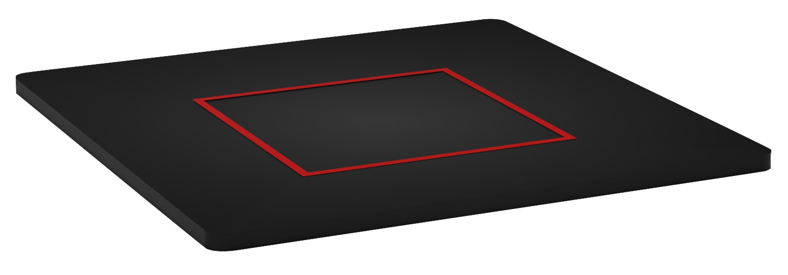
Learning
This project served as my first official foray into designing for virtual reality, where I learnt the different nuances involved in designing for a domain that people aren't used to. The project established a firm base in understanding virtual reality and what variables should be considered when designign for virtual reality.
Scope
The step forward from here is to build a prototype where users can perform the actions on a mat and they reflect in the virtual space. Using such a prototype, we can evaluate the interactions with a select group of participants ranging from multiple demographics. This will help us evaluate the interactions and the intuitivity of them.